Trapezoidal rule¶
Illustrates: basic array slicing, functions as first class objects.
In this exercise, you are tasked with implementing the simple trapezoid rule formula for numerical integration. If we want to compute the definite integral
(1)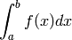
we can partition the integration interval ![[a,b]](../_images/math/8ecbd1ba3da8f2adef66a63f2ab32c47e63fa734.png) into smaller subintervals,
and approximate the area under the curve for each subinterval by the area of
the trapezoid created by linearly interpolating between the two function values
at each end of the subinterval. This is graphically illustrated in the Figure
below, where the blue line represents the function
into smaller subintervals,
and approximate the area under the curve for each subinterval by the area of
the trapezoid created by linearly interpolating between the two function values
at each end of the subinterval. This is graphically illustrated in the Figure
below, where the blue line represents the function  and the red line
represents the successive linear segments. The area under (the value of
the definite integral) can thus be approximated as the sum of the areas of all
these trapezoids. If we denote by
and the red line
represents the successive linear segments. The area under (the value of
the definite integral) can thus be approximated as the sum of the areas of all
these trapezoids. If we denote by  (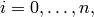 with 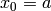 and
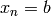) the abscissas where the function is sampled, then
(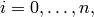 with 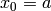 and
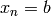) the abscissas where the function is sampled, then
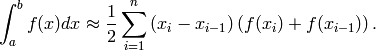
The common case of using equally spaced abscissas with spacing 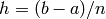 reads simply
(2)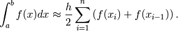
One frequently receives the function values already precomputed, 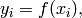 so equation (1) becomes
(3)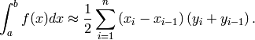

Illustration of the composite trapezoidal rule with a non-uniform grid (Image credit: Wikipedia).
In this exercise, you’ll need to write two functions, trapz and
trapzf. trapz applies the trapezoid formula to pre-computed values,
implementing equation (3), while trapzf takes a function  as
input, as well as the total number of samples to evaluate, and computes
eq. (2).
as
input, as well as the total number of samples to evaluate, and computes
eq. (2).
Test it and show that it produces correct values for some simple integrals you can compute analytically.